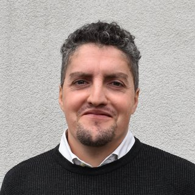

Fondazione Don Carlo Gnocchi este o fundație italiană fără scop lucrativ care, de peste 70 de ani, îngrijește persoane cu dizabilități, persoane vârstnice și pacienți care au nevoie de reabilitare, printr-o rețea de centre din nouă regiuni ale Italiei. Centrul său din Florența este recunoscut de Ministerul Sănătății din Italia ca Institut Științific de Cercetare, Spitalizare și Îngrijire Medicală (IRCCS) în domeniul reabilitării și găzduiește laboratoare de cercetare, printre care PROMISE@LAB și Unitatea de Reabilitare Neuromotorie Complexă, gestionată împreună cu Universitatea din Florența.
Rolul în INTEGRA
FDG coordonează proiectul și conduce managementul proiectului (WP1). A dezvoltat și certificat platforma de telereabilitare MAIA, utilizată în studiile pilot din Italia, Spania și România. Coordonează definirea cerințelor sistemului, protocolul studiului pilot și obținerea aprobării etice, precum și cadrul de evaluare a impactului, și gestionează locația pilot urbană din Italia.
Echipa
 Francesca Cecchi Cercetătoare principală și coordonatoare de proiect
Francesca Cecchi Cercetătoare principală și coordonatoare de proiect Michele Piazzini Manager de proiect
Michele Piazzini Manager de proiect Maria Luigia del Vicario
Maria Luigia del Vicario
Giulio Cherubini Virginia Ambrogi
Virginia Ambrogi Marco Baccini
Marco Baccini